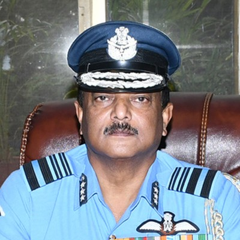
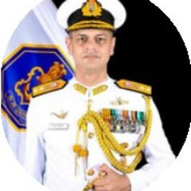
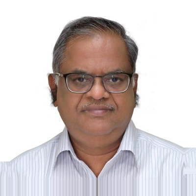
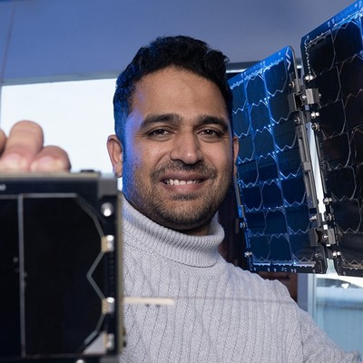
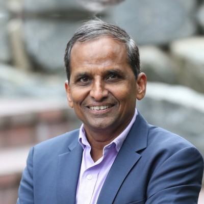

The people behind the machines
Apollyon is a team of 17+, up from nine at the start of 2026. It is deliberately built around a narrow set of disciplines the company refuses to buy in: propulsion, flight control, machine learning, airframe design and manufacturing. A board of advisors from the services, DRDO, space and industry reviews the work as it moves.
On this page
Two undergraduates with a workshop
Jayant and Sourya started the company in May 2025 from a hostel room at BITS Pilani Hyderabad, with 3D printers and a test bench. Both still hold the technical leads they took on at the start.
One team across propulsion, code and airframes
Nine engineering and operations roles, plus the wider group around them. Everyone listed here works on hardware that has flown.
A board that has run the systems we are building
Seven advisors from the Air Force, the Navy, DRDO, space and industry. They review programme decisions, test plans and qualification evidence as they accumulate.





What the field, and the press, have said
What national leadership, industry and the press have said about the team — Anand Mahindra, Piyush Goyal, The Times of India, and longer assessments from the space and venture ecosystem — is collected in one place, in the company history. The programmes these people run are on the product register.